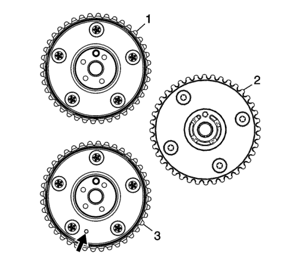
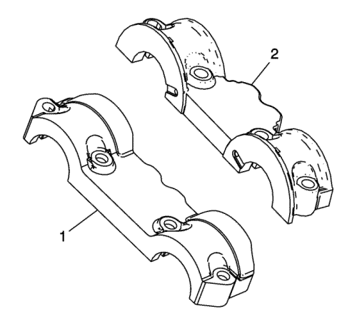
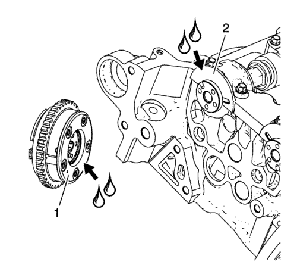
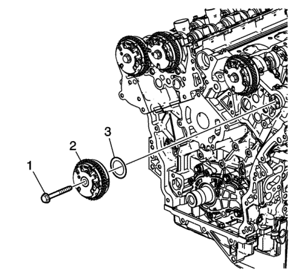

- Asegúrese de que esté montado el actuador de posición del árbol de levas correcto. Observe dónde está la marca "EX" (1) en el cuerpo del actuador de posición del árbol de levas. La marca es para un actuador de posición del árbol de levas de escape.
- Asegúrese de que se use la marca de sincronización correcta. Observe dónde está la marca circular (3) en el anillo exterior del actuador de posición del árbol de levas. La marca es para alinear al retentor de la cadena de distribución destacada en el lado izquierdo del motor.
Precaución: Consulte Precaución, reacción del par contra la cadena de accionamiento de distribución en la sección Prólogo
- Utilice una llave abierta hexagonal en el árbol de levas para impedir la rotación del árbol de levas al apretar el perno del actuador de posición del árbol de levas.

Nota:
| • | El actuador de posición del árbol de levas varía en función de la aplicación. |
| • | Algunas aplicaciones no utilizan una arandela de empuje de árbol de levas. |
- Asegúrese de que se utiliza la arandela de empuje del árbol de levas apropiada, si fuera el caso. Utilice una arandela de empuje de 1,6 mm (0,063 pulg.) en las aplicaciones que tengan 5 tornillos de sujeción en el lado posterior del actuador de posición del árbol de levas sin un punto de identificación (1). Utilice una arandela de empuje gruesa de 1,1 mm (0,043 pulg.) con manchas amarillas en las aplicaciones que tengan 4 tornillos de sujeción en el lado posterior del actuador de posición del árbol de levas (2) y en las aplicaciones que tengan 5 tornillos de sujeción en la parte posterior del actuador de posición del árbol de levas con un punto de identificación (3).

- Hay tapas de cojinetes delanteros de árbol de levas de primer diseño (1) y de segundo diseño (2). Las aplicaciones que tienen una tapa de cojinetes de árbol de levas de segundo diseño (2) no utilizan arandelas de empuje.

- Para las aplicaciones sin una arandela de empuje de árbol de levas, aplique una buena cantidad de lubricante en la parte posterior del actuador de posición del árbol de levas (1) y en la parte delantera de la tapa de cojinetes del árbol de levas (2). Consulte Adhesivos, líquidos, lubricantes y selladores para el lubricante recomendado.

- Monte de la arandela de empuje (3), si fuese de aplicación.
- Monte el actuador de posición del árbol de levas de escape izquierdo (2).
Precaución: Consulte Precaución con las fijaciones en la sección Prólogo
- Monte el tornillo del actuador de posición del árbol de levas (1) y apriételo hasta 58 N·m (43 lib. pulg.).